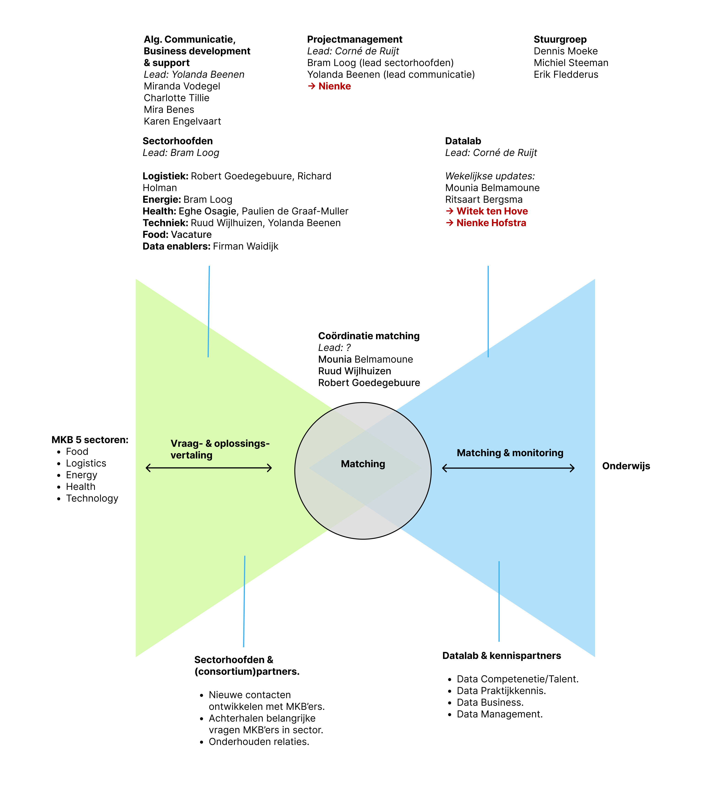

1 - Missie / Visie
Bedrijven uit het MKB-segment zijn zich vaak niet altijd bewust van wat de ontwikkelingen op het gebied van digitalisering en datatechnologie voor hen betekenen. Daar waar het bewustzijn wel aanwezig is of de noodzaak wordt gevoeld om te veranderen, is helaas niet altijd relevante kennis en expertise aanwezig. De SPRONG-groep Kansen met Data (KmD) wil het MKB gaan helpen met digitaliserings- en datavraagstukken door kennis en kunde te bundelen in één gezamenlijke onderzoeksgroep en deze te delen diverse (kennis)partners, het onderwijs én de praktijk (‘Kansen voor data én samenwerking in mkb: Windesheim en HAN versterken concurrentiekracht in regio door inzet van data’ z.d.).
Digitale Transformatie in Europa
Europa lijkt achter te lopen op zijn Amerikaanse en Chinese rivalen als het gaat om de digitale economie. Nepnieuws, onzeker werk en gegevensdiefstal zijn allemaal toegenomen onder de Amerikaanse digitale hegemonie, waar slechts een paar particuliere bedrijven de digitale wereld domineren (zie Figuur 1). Wat kunnen wij als Europeanen doen om de achterstand weer in te halen en hoe ver zijn we daarmee?
2 - Strategie
Kansen met Data heeft twee doelstellingen:
Het ontwikkelen van langetermijnrelaties met MKB’ers om hun echt een stap verder te brengen in Data Science.
Het verbeteren van onderwijs op het gebied van Data Science binnen Hogeschool Windesheim en de HAN.
3 - Organisatie
Vanaf september 2022 is er organisatorisch een nieuwe weg ingeslagen, hierin staan vier groepen centraal:
De Sectorhoofden: De schakel tussen MKB/strategische partners (publiek, netwerkorganisaties, etc.) en KmD.
Het Datalab: De schakel tussen KmD en het onderwijs/onderzoek binnen de hogescholen.
Matchingscoördinatie: Het borgen van het proces van MKB-vraag tot uitvoering binnen onderwijs/onderzoek.
Algemene communicatie, business development & support:
De strategische agenda’s kennen van strategische partners en mogelijkheden zien waar we als Kansen met Data op kunnen aansluiten.
Profilering van KmD-activiteiten (workshops, events, whitepapers, etc.).
Ondersteuning van de SPRONG-groep.

Samenwerking Datalab
Er zijn drie mogelijke vormen van samenwerking (Skelton en Pais 2019) waaruit kan worden gekozen:
Close collaboration: Nauwe samenwerking tussen Hogeschool Windesheim en de HAN. Bv.: we stellen één team vanuit Windesheim en HAN samen om de maturity scan verder te ontwikkelen.
Facilitator: Één groep (bv. een lectoraat) richt zich voornamelijk op de ontwikkeling van een bepaald product/dienst binnen het datalab. Als het product/dienst eenmaal handen en voeten heeft faciliteert het dit product/dienst aan de andere groep, waarbij ondersteuning wordt geboden. Bv.: L&A richt zich op doorontwikkeling van de scan, en faciliteert deze voor gebruik aan Windesheim, waarbij zij toelichting geven op de keuzes die gemaakt zijn, en Windesheim suggesties kan doorgeven voor aanpassingen.
X-As-A-Service (XAAS): Vergelijkbaar met facilitator, echter wordt hier een product/dienst geleverd ‘as is’. De groep die het product/dienst heeft ontwikkeld, faciliteert hier dus niet in de adoptie binnen een andere groep en ook is er geen ruimte voor ‘feature requests’. Bv.: De HAN ontwikkeld de maturity scan ‘as is’. Windesheim kan er gebruik van maken, maar er is geen mogelijkheid om verdere uitleg te ontvangen over de werking van de scan, dan wel om invloed uit te oefenen op de ontwikkeling van de scan.
- Welke samenwerkingsvorm kiezen we zodat we optimaal aan onze doelstelling kunnen werken?
4 - Activiteiten
Onderzoek, de subsidiecall van SPRONG leest: “Het SPRONG-programma richt zich niet direct op het uitvoeren van praktijkgericht onderzoek, maar op de randvoorwaarden om tot goed praktijkgericht onderzoek te komen.” Onder onderzoek verstaan we hierbij dan ook niet direct het onderzoek zelf, maar vooral (a) weten van elkaars onderzoek, en (b) mogelijkheden herkennen tot samenwerking in onderzoek. Het afgelopen jaar is meerdere malen gekeken of de twee lectoraten gezamenlijk bij onderzoekvoorstellen betrokken konden worden, maar dit werd in de meeste gevallen geïniteerd door de lectoren. Door beter te weten van elkaars onderzoek wordt het makkelijker om samenwerking op te zoeken.
Data Management, op het gebied van data management voor data science schiet het beleid van de hogescholen soms te kort. Zo is het Windesheim beleid dat bedrijven zelf verantwoordelijk zijn dat zij een veilige omgeving bieden wanneer studenten aan de slag gaan met hun data. Ondanks dat dit vanuit juridisch oogpunt logisch is, is nu net het probleem dat veel MKB’ers data management niet goed op orde hebben. Deze activiteit gaat dus over de vraag hoe we het proces geschetst in Figuur 1 op een veilige*** manier kunnen doen.
Maturity scan, doorontwikkeling & uitrol van de door DAC ontwikkelde data maturity scan.
Digitaal platform/helpdesk, het afgelopen jaar is er meermaals gesproken over de mogelijkheid om een digitaal platform op te tuigen waarop kennis vanuit KmD gedeeld kan worden met partners (of andere geïnteresseerden).
Profilering, als datalab willen we laten zien wat we doen, om zo bedrijven en studenten enthousiast te maken voor data science. Dit kan door bv. workshops, whitepapers, etc.
- Op welke activiteiten richten we ons, zodat we onze doelstelling gaan bereiken?
5 - Budget en investeringen
- Hoeveel budget krijgt het Datalab en hoe wordt deze verdeeld over de afzonderlijke activteiten?